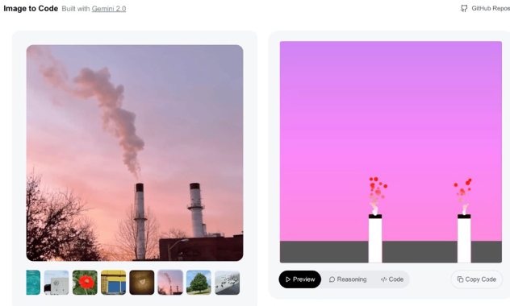

This week’s lecture delved into the theme of “AI-assisted programming,” introducing not only the current capabilities of AI in code generation, repair, and interpretation but also sharing insights and predictions from tech leaders at OpenAI, Anthropic, NVIDIA, and other firms. More importantly, the lecture guided us to revisit the meaning of “learning programming” in the AI era from three dimensions: technical competency, critical thinking, and creative practice.
At the lecture’s outset, the speaker cited views from Silicon Valley executives like Sam Altman of OpenAI and NVIDIA’s founder, stating:
“90% of code may be written by AI in the future, and programming languages will become natural languages.”
This trend signals that AI will replace mid-level programmers, while human roles will shift toward creative planning, project definition, and structural review. However, the speaker also emphasized that “knowing how to program” remains a vital path to understanding computational logic and exercising thinking patterns. Even if AI can write code, we still need to understand “what it wrote and why.”
The lecture analyzed several key applications of AI-assisted programming:
- Code generation (prompt-to-code): Generating program structures through natural language descriptions of requirements.
- Code repair (debugging): Using AI to detect bugs and optimize structures.
- Code interpretation (learning): Inputting unfamiliar code segments for AI to explain the logic line by line.
- Project initiation (kick-off help): Overcoming “blank page syndrome” by providing rapid prototypes for creative ideas.
We also studied two common AI issues:
- Level error: Code directly throws errors (e.g., referencing non-existent functions or libraries).
- Function error: Code runs without errors but produces opposite results (e.g., left-right images are flipped).
This taught me that AI isn’t an “answer machine,” but a collaborative system of rapid generation + human judgment. Critical use of AI is the key.

The course’s case studies showcased creative applications like P5.js generative art, image2code conversion, and automated creation agents (such as the Botto artist). These examples helped me realize:
- Programming isn’t just “technical labor” it’s also a form of expression.
- With AI, we can shift from being “programmers” to “language designers” of creative systems.
- Using AI isn’t about cutting corners; it’s an accelerator for freeing up cognitive bandwidth for higher-level thinking.
Although AI can automatically generate much content, this lesson has made me more convinced that learning to program oneself is crucial for understanding systems, expressing creativity, and building judgment. As the speaker said:
“AI will not replace humans those who use AI will replace those who don’t.”
What I aim to do is understand AI, collaborate with it, and go beyond it treating it as an assistant, not a master. Because in truly complex problems, models cannot decide “what to do” they can only execute “how to do it”. Defining the direction, judging values, and understanding context still require humans.